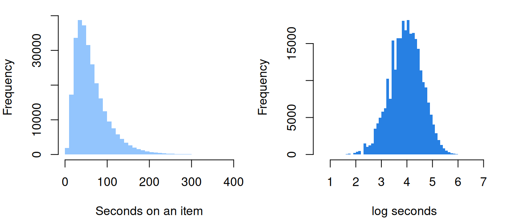
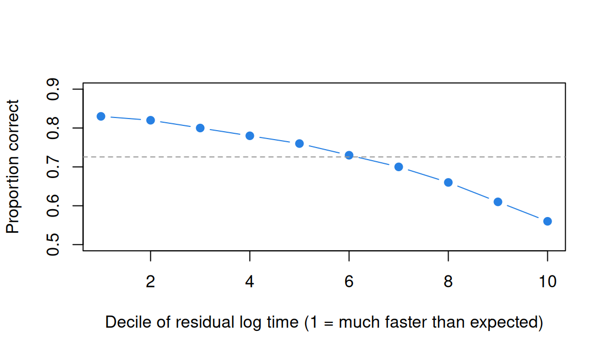
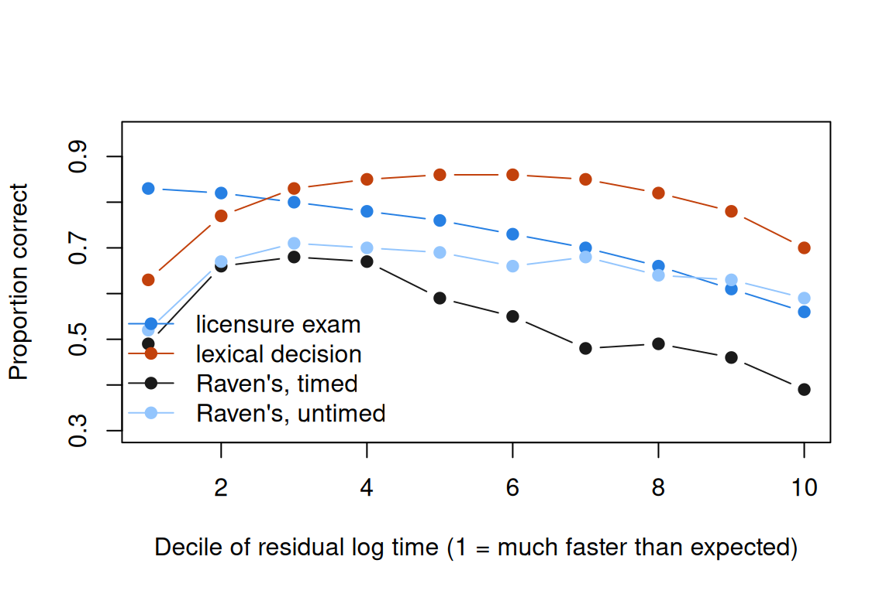
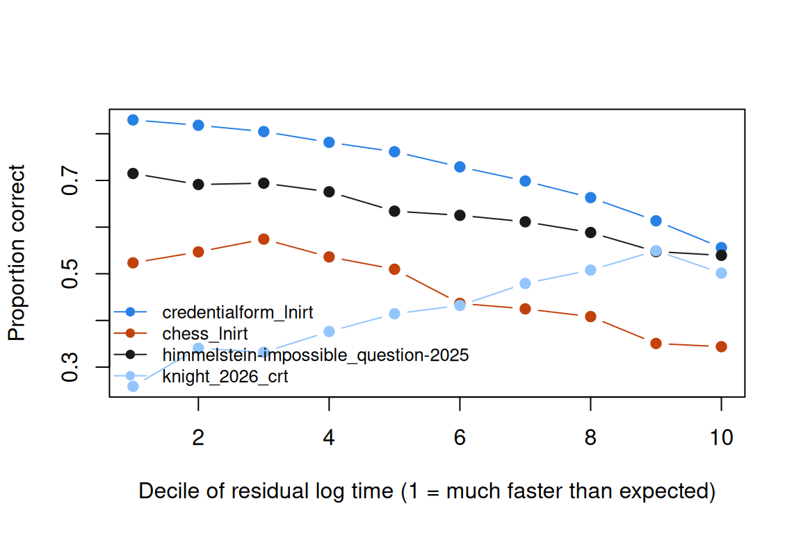

Response time and the speed-accuracy tradeoff
What this is for
A test given on a screen records two things for every response: whether it was right, and how long it took. What should we do with the second? One answer is a model in which each respondent has an ability and a speed, each item a difficulty and a time intensity, joined by correlations. It rests on two assumptions: each respondent works at one speed throughout, and once ability and speed are known, a response’s time says nothing more about whether it was right. This lesson fits log time with the crossed random effects of Explanatory item response models, separates what happens across people from what happens within a person, and asks four IRW tables whether the assumptions hold. They give different answers, and that is the lesson.
Goals
By the end of this lesson you should be able to:
- fit the lognormal model for response times as a crossed random-effects model with
lmer(), and read its variance components; - write down the hierarchical model for speed and accuracy and state its two central assumptions;
- explain why the speed–accuracy tradeoff is a claim about a person that the correlation of speed and ability across people can’t test;
- compute a conditional accuracy function from residual log time and say what it would look like under conditional independence;
- decide when a response-time model answers the question you have.
Core ideas
Response time is data, and it is skewed
Times are positive, and a few are very long (someone rereads a passage, or looks away), so their distribution has a long right tail, which taking logs removes (see the widget). The lognormal model (van der Linden, 2006) writes \[\log t_{ij} = \kappa_i - \tau_j + \varepsilon_{ij}, \qquad \varepsilon_{ij} \sim N(0, \sigma^2),\] where \(\kappa_i\) is item \(i\)’s time intensity (how long it takes, in log seconds) and \(\tau_j\) is respondent \(j\)’s speed. (Van der Linden writes this parameter as \(\beta_i\). We use \(\kappa_i\) because \(\beta\) means a regression coefficient in this course, such as the easiness in Explanatory item response models.) Van der Linden gives each item its own residual SD, but reports that making them equal cost little fit, so we use one \(\sigma\). With items and respondents random, this is a linear mixed model, one line in lme4 (Bates, Mächler, Bolker & Walker, 2015):
lmer(log(rt) ~ 1 + (1 | id) + (1 | item), data = long_table)The model is additive in log time, so it is multiplicative in seconds: a respondent whose \(\tau\) is 0.2 higher than another’s takes \(e^{-0.2} \approx 0.82\) times as long on every item.
Try it: raw and log time
Times for one item from the lognormal model, with defaults close to the licensure exam below.
The seconds have a long tail; the log times don’t. Raise σ and the mean pulls away from the median, which stays put: the gap is the tail (problem 1).
The hierarchical model, and what it assumes
Now join the halves. Accuracy gets an item response model, here the Rasch model, \[\text{logit}\Pr(x_{ij} = 1) = \theta_j - b_i,\] and time gets the lognormal model. At a second level, each respondent’s \((\theta_j, \tau_j)\) is drawn from a bivariate normal distribution with correlation \(\rho\), and each item’s \((b_i, \kappa_i)\) from another. This is the hierarchical model for speed and accuracy (van der Linden, 2007; Klein Entink, Fox & van der Linden, 2009), which the R package LNIRT fits jointly (Fox, Klotzke & Simsek, 2023).
What does it buy? Estimates of \(\rho\) (are abler respondents faster?) and of how difficulty and time intensity go together; and, through \(\rho\), times that sharpen the estimate of \(\theta\). Both rest on two assumptions, which we take as questions for the data:
- One speed per respondent. \(\tau_j\) has no item subscript: respondent \(j\) works at the same speed on the first item and the last.
- Conditional independence. Given \(\theta_j\), \(\tau_j\) and the item parameters, \(x_{ij}\) and \(t_{ij}\) are independent. A response slower than expected is no more and no less likely to be right.
Bolsinova, De Boeck and Tijmstra (2017) relax the second: on a low-stakes test, slow responses were more often right on hard items and less often on easy ones. Below, we fit the halves separately with lme4 and correlate their estimates: a rough version of the joint model, but one that makes each assumption visible.
The speed–accuracy tradeoff is a claim about a person
Push people to go faster and they make more errors: the speed–accuracy tradeoff (SAT), seen in insects, rodents and primates (Heitz, 2014). But it describes what happens within a person when their speed changes. Whether faster people are more accurate is \(\rho\), and the link between time and success can take either sign: Goldhammer et al. (2014) found more time on task going with success on an adult skills survey’s problem-solving tasks, and with failure on its reading tasks.
The pooled comparison mixed a difference between items (hard conditions are slow and error-prone) with one within them. In the hierarchical model the item-level part is the correlation of \(b\) and \(\kappa\), and the person-level part is \(\rho\). Neither is the tradeoff.
Try it: between people and within them
Each line is one respondent: how their chance of success changes when a response takes longer than usual. The dots are their averages over 30 items.
With the defaults, abler respondents are faster, so the dots slope down; yet every line slopes up, because each respondent does better when they slow down. Set ρ to −0.4 and the effect to −1 and both signs flip. The dots can’t tell you the slope of the lines.
Does conditional independence hold? The conditional accuracy function
To see the within-person relation, keep the lognormal model’s residual, \(\hat\varepsilon_{ij} = \log t_{ij} - \hat\kappa_i + \hat\tau_j\): how much slower (positive) or faster (negative) than expected this respondent was on this item. Plot accuracy against it, by deciles. This is a conditional accuracy function (Heitz, 2014). Under conditional independence it is flat. Domingue et al. (2022) asked the question of 29 datasets from cognitive tasks and found no single shape: a respondent’s marginal increases in time went with higher accuracy in some and lower in others. They also found time a weak predictor of accuracy.
Try it: shapes of the conditional accuracy function
Simulated data (300 respondents, 20 items) in which residual log time changes the log odds of a correct response, in the shape you choose.
With “none”, the curve wobbles around the dashed line: the sampling noise of 600 responses per decile. With “inverted U”, responses near the expected time do best, and the linear slope is close to zero. A single slope summarises a curve that only rises or only falls; it can report no relation when there plainly is one.
Is speed constant?
Checking the first assumption needs the order in which items were given. Domingue, Kanopka, Stenhaug, Soland, Kuhfeld, Wise and Piech (2021) had it for an adaptive reading test and found response acceleration: a response ten positions later took about 88% as long, and one thirty positions later about \(0.88^3 \approx 68\%\) as long. Respondents with lower ability estimates accelerated more, and for them faster responses were less accurate than expected. Very fast responses at chance are the extreme case, rapid guesses (Wise & Kong, 2005).
Try it: response acceleration
A respondent speeds up over 40 items of equal time intensity.
With one speed per respondent, the change lands in the residuals: early responses look slow, late ones fast. If accuracy also changes over the test, the conditional accuracy function picks that up, and the two assumptions fail together.
Simulate
The code generates 200 respondents × 20 items from the hierarchical model with \(\rho = 0.4\) and conditional independence (delta <- 0), and fits log time with lmer() and accuracy with glmer(). The first run takes 30 to 45 seconds, most of it loading lme4.
With the seed as written, the estimated abilities and speeds correlate 0.38 (truth 0.40). The pooled slope of accuracy on log time is −0.55, yet the within-person slope is −0.09 (SE 0.07) and the deciles are flat: the pooled slope is all between people and items. Set delta <- -1 and the within-person slope comes back at −1.01, with deciles falling from 0.71 to 0.36. Set rho <- -0.4 with delta <- 0: the pooled slope shrinks to −0.16, as able-and-slow respondents offset hard-and-slow items, and the within-person slope stays near zero.
Download this code to run it as large as you like in your own R session.
With real data
credentialform_lnirt is the main example: a long, high-stakes test. roar_lexical is the contrast: a task answered in under a second, reused from Guessing and priors for its rapid responses. rapm_poulton_2022_timed and rapm_poulton_2022_untimed do one job together: the same 12 items with and without a clock, the nearest these tables come to forcing speed. Download the code; it needs lme4.
A licensure exam
One form of a credentialing exam, a dataset with suspected cheating from the Handbook of quantitative methods for detecting cheating on tests (Cizek & Wollack, 2016) and distributed with LNIRT. Keying: 1 is a correct answer.
Code
library(lme4)
options(digits = 7) # R's default, in case a .Rprofile changes it
url <- "https://redivis.com/api/v1/tables/datapages.item_response_warehouse:v60_0.credentialform_lnirt/rows?format=csv"
cf <- read.csv(url)
# One row per response; resp is 1 for a correct answer, rt the time on the item in
# whole seconds. Items iraw.1-170 are the scored items, which everyone answered.
# iraw.171-200 hold pilot items, and which pilot items sit under a name depends on
# the respondent's pilot set (Pretest), so we keep the scored items only.
cf$inum <- as.integer(sub("iraw.", "", cf$item))
cf <- cf[cf$inum <= 170, ]
c(respondents = length(unique(cf$id)), items = length(unique(cf$item)),
missing = sum(is.na(cf$resp)), time_zero = sum(cf$rt == 0))respondents items missing time_zero
1636 170 0 105 Code
# A time of 0 means under a second; log(0) is undefined, so those rows are set aside.
cf <- cf[cf$rt > 0, ]
cf$lrt <- log(cf$rt)
round(c(accuracy = mean(cf$resp), median_s = median(cf$rt), mean_s = mean(cf$rt),
max_s = max(cf$rt)), 2)accuracy median_s mean_s max_s
0.73 54.00 63.83 1216.00 A gentle note on processing: items 171 to 200 are pilot items, and which one sits under each name depends on the respondent’s pilot set (processing script), so we keep the 170 scored items. Times are whole seconds; 105 zeros are set aside. The median is 54 s, the mean 64 s, the longest 1,216 s:
Code
op <- par(mfrow = c(1, 2), mar = c(4, 4, 1, 1))
hist(cf$rt, breaks = 100, col = "#93c5fd", border = NA, main = "",
xlab = "Seconds on an item", xlim = c(0, 400))
hist(cf$lrt, breaks = 60, col = "#2780e3", border = NA, main = "",
xlab = "log seconds")
Code
par(op)On the log scale the tail is gone. The lognormal model:
Code
# The lognormal model with crossed random effects: log t = kappa_i - tau_j + e.
# lme4 writes it as an intercept plus an item effect (time intensity) and a
# respondent effect (minus speed).
m_time <- lmer(lrt ~ 1 + (1 | id) + (1 | item), cf)
vc <- as.data.frame(VarCorr(m_time))
data.frame(component = vc$grp, variance = round(vc$vcov, 3),
share = round(vc$vcov / sum(vc$vcov), 2))| component | variance | share |
|---|---|---|
| id | 0.029 | 0.07 |
| item | 0.109 | 0.28 |
| Residual | 0.255 | 0.65 |
Code
round(exp(fixef(m_time)), 1) # the typical time on a typical item, in seconds(Intercept)
52.8 Most of the variation in log time (65%) is residual; items account for 28%, respondents for 7%. Now accuracy, and the correlations of the two models’ estimates:
Code
# The Rasch model as a GLMM with random items (explanatory-irt). nAGQ = 0 skips
# glmer's slowest step; the estimates barely move.
m_acc <- glmer(resp ~ 1 + (1 | id) + (1 | item), cf, binomial, nAGQ = 0)
# Person and item estimates from the two models. Speed is minus the respondent effect
# on log time; difficulty b is minus the item effect on the logit.
person_item <- function(m_time, m_acc) {
tau <- setNames(-ranef(m_time)$id[, 1], rownames(ranef(m_time)$id))
theta <- setNames(ranef(m_acc)$id[, 1], rownames(ranef(m_acc)$id))
kappa <- setNames(ranef(m_time)$item[, 1], rownames(ranef(m_time)$item))
b <- setNames(-ranef(m_acc)$item[, 1], rownames(ranef(m_acc)$item))
list(tau = tau[names(theta)], theta = theta, kappa = kappa[names(b)], b = b)
}
pi_cf <- person_item(m_time, m_acc)
round(c(r_theta_speed = cor(pi_cf$theta, pi_cf$tau), r_b_kappa = cor(pi_cf$b, pi_cf$kappa)), 2)r_theta_speed r_b_kappa
0.30 0.48 Abler respondents are faster (\(r = 0.30\)), and harder items take longer (\(r = 0.48\)): rough versions of \(\rho\) and its item-level counterpart.
Is conditional independence plausible here?
Code
# The conditional accuracy function. The residual of the time model is how much
# slower (positive) or faster (negative) than expected a response was, for this
# respondent on this item. Under conditional independence, accuracy doesn't depend on it.
caf <- function(d, m_time) {
d$res <- residuals(m_time)
d$decile <- cut(d$res, quantile(d$res, 0:10 / 10), include.lowest = TRUE, labels = FALSE)
m <- glmer(resp ~ res + (1 | id) + (1 | item), d, binomial, nAGQ = 0)
list(by_decile = round(tapply(d$resp, d$decile, mean), 2),
slope = round(unname(fixef(m)["res"]), 2), se = round(sqrt(diag(vcov(m)))[2], 2))
}
caf_cf <- caf(cf, m_time)
caf_cf$by_decile
1 2 3 4 5 6 7 8 9 10
0.83 0.82 0.80 0.78 0.76 0.73 0.70 0.66 0.61 0.56
$slope
[1] -1.03
$se
res
0.01 Code
plot(1:10, caf_cf$by_decile, type = "b", pch = 19, col = "#2780e3", ylim = c(0.5, 0.9),
xlab = "Decile of residual log time (1 = much faster than expected)",
ylab = "Proportion correct")
abline(h = mean(cf$resp), lty = 2, col = "#999")
The curve falls through every decile, from 0.83 to 0.56, and the slope with person and item effects is −1.0. A slow response signals difficulty that neither \(b\) nor \(\theta\) captures. And the first assumption? The table doesn’t record item order, so we can’t look for acceleration, but we can ask whether a respondent’s speed is the same on two halves of the items.
Code
# One speed per respondent? Give each respondent a speed on items 1-85 and another
# on items 86-170, and let the model estimate their correlation.
cf$half <- factor(ifelse(cf$inum <= 85, "items 1-85", "items 86-170"))
m_half <- lmer(lrt ~ half + (0 + half | id) + (1 | item), cf)
round(attr(VarCorr(m_half)$id, "correlation")[1, 2], 2)[1] 1It is: the two speeds correlate at 1 (to two decimals). Whether one speed holds across time, these data can’t say.
Lexical decision
In the ROAR lexical decision task (Yeatman et al., 2021), children and adolescents judged whether a string of letters was a real word. Keying: 1 is a correct classification.
Code
url <- "https://redivis.com/api/v1/tables/datapages.item_response_warehouse:v60_0.roar_lexical/rows?format=csv"
roar <- read.csv(url)
# One response per respondent per item; resp is 1 for a correct classification of
# the string (real word or made-up word); rt in seconds. No waves.
roar$lrt <- log(roar$rt)
round(c(respondents = length(unique(roar$id)), items = length(unique(roar$item)),
accuracy = mean(roar$resp), median_s = median(roar$rt),
share_under_0.3s = mean(roar$rt < 0.3),
accuracy_under_0.3s = mean(roar$resp[roar$rt < 0.3])), 3) respondents items accuracy median_s
123.000 500.000 0.797 0.851
share_under_0.3s accuracy_under_0.3s
0.031 0.508 Code
t_roar <- lmer(lrt ~ 1 + (1 | id) + (1 | item), roar)
a_roar <- glmer(resp ~ 1 + (1 | id) + (1 | item), roar, binomial, nAGQ = 0)
pi_roar <- person_item(t_roar, a_roar)
round(c(r_theta_speed = cor(pi_roar$theta, pi_roar$tau), r_b_kappa = cor(pi_roar$b, pi_roar$kappa)), 2)r_theta_speed r_b_kappa
-0.09 0.63 Code
caf_roar <- caf(roar, t_roar)
caf_roar$by_decile
1 2 3 4 5 6 7 8 9 10
0.63 0.77 0.83 0.85 0.86 0.86 0.85 0.82 0.78 0.70
$slope
[1] 0.09
$se
res
0.02 Code
# One speed for real words and made-up words?
m_kind <- lmer(lrt ~ realpseudo + (0 + realpseudo | id) + (1 | item), roar)
round(attr(VarCorr(m_kind)$id, "correlation")[1, 2], 2)[1] 0.98The median response takes 0.85 s, and the picture changes. Speed and ability are nearly unrelated (\(r = -0.09\)), though harder strings again take longer (\(r = 0.63\)). The conditional accuracy function is an inverted U: 0.63 in the fastest decile, 0.86 in the middle, 0.70 in the slowest. Its fast end holds the rapid responses. The linear slope, 0.09, is as uninformative as the widget’s. One speed per respondent looks reasonable across kinds of string: speeds on real and made-up words correlate 0.98.
Raven’s matrices, with and without a clock
Poulton et al. (2022) gave a 12-item online form of Raven’s Advanced Progressive Matrices untimed in one study and with 60 seconds per item in another. Keying: 1 is correct. We use the first administration (a retest is stored as wave 2). The studies drew different samples, the timed one younger, so this compares groups, not a within-person experiment.
Code
# Two studies (Poulton et al., 2022), each with a retest (wave 2) for some
# respondents. We keep the first administration. rt is in seconds; the timed version
# stopped each item at 60 s.
get_raven <- function(table) {
url <- sprintf("https://redivis.com/api/v1/tables/datapages.item_response_warehouse_2:v24_0.%s/rows?format=csv", table)
d <- read.csv(url)
d <- d[d$wave == 1 & !is.na(d$resp), ]
d$item <- factor(d$item, levels = paste0("RAPM_", 1:12))
d
}
timed <- get_raven("rapm_poulton_2022_timed")
untimed <- get_raven("rapm_poulton_2022_untimed")
rbind(timed = c(respondents = length(unique(timed$id)), accuracy = round(mean(timed$resp), 2),
median_s = median(timed$rt, na.rm = TRUE), time_missing = sum(is.na(timed$rt))),
untimed = c(length(unique(untimed$id)), round(mean(untimed$resp), 2),
median(untimed$rt, na.rm = TRUE), sum(is.na(untimed$rt)))) respondents accuracy median_s time_missing
timed 479 0.55 35.915 0
untimed 608 0.65 46.910 492Code
# How often did the clock run out, and how accurate were those responses?
at_limit <- timed$rt >= 59.9
round(c(share_at_limit = mean(at_limit), accuracy_at_limit = mean(timed$resp[at_limit]),
untimed_share_over_60s = mean(untimed$rt > 60, na.rm = TRUE)), 2) share_at_limit accuracy_at_limit untimed_share_over_60s
0.11 0.29 0.36 Code
# Accuracy item by item: which items lose most under the clock?
round(rbind(untimed = tapply(untimed$resp, untimed$item, mean),
timed = tapply(timed$resp, timed$item, mean)), 2) RAPM_1 RAPM_2 RAPM_3 RAPM_4 RAPM_5 RAPM_6 RAPM_7 RAPM_8 RAPM_9 RAPM_10
untimed 0.83 0.81 0.9 0.82 0.82 0.68 0.59 0.52 0.50 0.45
timed 0.71 0.75 0.8 0.70 0.74 0.65 0.41 0.51 0.41 0.25
RAPM_11 RAPM_12
untimed 0.47 0.38
timed 0.28 0.33Without a clock, 36% of responses take longer than 60 s. With one, 11% hit the limit, and those are right 29% of the time. Accuracy is 0.55 timed against 0.65 untimed, and hard items lose most: item 10 falls from 0.45 to 0.25, item 3 only from 0.90 to 0.80. That fits a tradeoff forced by the deadline, as far as two samples can show it.
Code
# Responses without a time (and two timed responses under 0.5 s) are set aside.
timed <- timed[!is.na(timed$rt) & timed$rt >= 0.5, ]
untimed <- untimed[!is.na(untimed$rt), ]
timed$lrt <- log(timed$rt); untimed$lrt <- log(untimed$rt)
fits <- lapply(list(timed = timed, untimed = untimed), function(d) {
mt <- lmer(lrt ~ 1 + (1 | id) + (1 | item), d)
ma <- glmer(resp ~ 1 + (1 | id) + (1 | item), d, binomial, nAGQ = 0)
p <- person_item(mt, ma)
list(r = round(c(r_theta_speed = cor(p$theta, p$tau), r_b_kappa = cor(p$b, p$kappa)), 2),
caf = caf(d, mt))
})
fits$timed
$timed$r
r_theta_speed r_b_kappa
-0.36 0.74
$timed$caf
$timed$caf$by_decile
1 2 3 4 5 6 7 8 9 10
0.49 0.66 0.68 0.67 0.59 0.55 0.48 0.49 0.46 0.39
$timed$caf$slope
[1] -0.64
$timed$caf$se
res
0.08
$untimed
$untimed$r
r_theta_speed r_b_kappa
-0.45 0.82
$untimed$caf
$untimed$caf$by_decile
1 2 3 4 5 6 7 8 9 10
0.52 0.67 0.71 0.70 0.69 0.66 0.68 0.64 0.63 0.59
$untimed$caf$slope
[1] -0.04
$untimed$caf$se
res
0.05 Here abler respondents are slower: \(r = -0.36\) timed and \(-0.45\) untimed, much as Goldhammer et al. (2014) found for problem solving. Within a respondent, the timed version’s curve rises over the fastest few deciles and then falls, to 0.39 in the slowest (slope −0.64); the untimed version’s is nearly flat (slope −0.04) apart from its fastest decile, 0.52 against 0.68 in the middle. (Timed log times are cut off at 60 s, which the lognormal model doesn’t know.)
Four tables, four answers
Code
tab <- data.frame(
table = c("licensure exam", "lexical decision", "Raven's, timed", "Raven's, untimed"),
median_s = c(median(cf$rt), median(roar$rt), median(timed$rt), median(untimed$rt)),
r_theta_speed = c(cor(pi_cf$theta, pi_cf$tau), cor(pi_roar$theta, pi_roar$tau),
fits$timed$r[1], fits$untimed$r[1]),
fastest = c(caf_cf$by_decile[1], caf_roar$by_decile[1], fits$timed$caf$by_decile[1],
fits$untimed$caf$by_decile[1]),
middle = c(mean(caf_cf$by_decile[5:6]), mean(caf_roar$by_decile[5:6]),
mean(fits$timed$caf$by_decile[5:6]), mean(fits$untimed$caf$by_decile[5:6])),
slowest = c(caf_cf$by_decile[10], caf_roar$by_decile[10], fits$timed$caf$by_decile[10],
fits$untimed$caf$by_decile[10]),
slope = c(caf_cf$slope, caf_roar$slope, fits$timed$caf$slope, fits$untimed$caf$slope))
tab[, -1] <- round(tab[, -1], 2)
tab| table | median_s | r_theta_speed | fastest | middle | slowest | slope |
|---|---|---|---|---|---|---|
| licensure exam | 54.00 | 0.30 | 0.83 | 0.74 | 0.56 | -1.03 |
| lexical decision | 0.85 | -0.09 | 0.63 | 0.86 | 0.70 | 0.09 |
| Raven’s, timed | 35.92 | -0.36 | 0.49 | 0.57 | 0.39 | -0.64 |
| Raven’s, untimed | 46.91 | -0.45 | 0.52 | 0.68 | 0.59 | -0.04 |
Code
cols <- c("#2780e3", "#c2410c", "#1a1a1a", "#93c5fd")
all_caf <- rbind(caf_cf$by_decile, caf_roar$by_decile, fits$timed$caf$by_decile,
fits$untimed$caf$by_decile)
matplot(1:10, t(all_caf), type = "b", pch = 19, lty = 1, col = cols, ylim = c(0.3, 0.95),
xlab = "Decile of residual log time (1 = much faster than expected)",
ylab = "Proportion correct")
legend("bottomleft", tab$table, col = cols, pch = 19, lty = 1, bty = "n")
Back to the two questions. One speed per respondent held across the item sets we could compare; these tables can’t test it across time. Conditional independence fails in all four, in different shapes, least in the untimed Raven’s. How speed and accuracy go together is a property of the task, not a constant of nature.
So when would I model response time? When the question is about how people take the test: rapid guessing, speededness, whether a time limit changes what is measured, or unusual timing (van der Linden & Guo, 2008). There the hierarchical model is a reasonable starting point, with the conditional accuracy function as the first check on it. I wouldn’t model response time to sharpen \(\theta\). The IRW’s response time and accuracy vignette added log time, centred within items, to a Rasch model for 18 tables: the median gain in out-of-sample prediction (IMV) was 0.0054, positive in 78% of tables; with a flexible curve, 0.0091 (94%).
So in a typical table response time adds to prediction about half what the 2PL does (0.0054 against 0.01), though in some, the licensure exam among them, it adds more (Across the IRW). It says more about how people took the test than about what they know.
Problems
- Medians and means. Under the lognormal model, show that the median of \(t_{ij}\) is \(\exp(\kappa_i - \tau_j)\) and that the mean is larger by the factor \(\exp(\sigma^2/2)\). With \(\sigma = 0.5\), how much larger? Why do response-time summaries report medians?
- Which slope? (PS9#1) On
roar_lexical, fitglmer(resp ~ lrt + (1 | item) + (1 | id))withlrtthe raw log time. Then replacelrtwith log time centred within person and item. Which slope answers the speed–accuracy question? Add a squared term: what does it show? - Flagged respondents.
credentialform_lnirtmarks 46 respondents whom the test vendor suspected of inappropriate behaviour (Flagged). Compare their accuracy and speed with everyone else’s. What would preknowledge of some items leave in the data that averages can’t show, and how would you look for it? - A speed score? Should a program report estimated speed \(\hat\tau_j\) beside \(\hat\theta_j\)? Argue both sides from the four tables. What would the score mean on the licensure exam, and on Raven’s matrices?
- Design a time limit. To study the speed–accuracy tradeoff with a 20-item reasoning test, compare a limit per item, a limit for the whole test, and a deadline on a random half of each respondent’s items. Which lets you estimate a within-person tradeoff, and what does each assume?
- Challenge (open). Propose one process that gives an inverted U in lexical decision and a falling curve on the licensure exam. What does it predict for Raven’s matrices? Process models for response time takes one route; I don’t know of a single account that fits all three.
Across the IRW
How are speed and accuracy related across the IRW’s timed tables? For each table with 0/1 responses, response times and at least 150 respondents, compute.R runs this lesson’s analysis (the two correlations and the conditional accuracy function) and the IMV of adding log time, centred within items, to the accuracy model, on held-out responses.
Code
dd_path <- file.path("..", "deepdives", "response-time", "results.rds")
dd <- if (file.exists(dd_path)) readRDS(dd_path) else NULL
if (!is.null(dd)) {
s <- dd$summary[order(dd$summary$r_theta_speed), ]
print(data.frame(table = s$table, respondents = s$n_resp, items = s$n_items,
median_s = signif(s$median_rt, 2), r_theta_speed = round(s$r_theta_speed, 2),
r_b_kappa = round(s$r_b_kappa, 2), caf_fastest = round(s$caf_fastest, 2),
caf_slowest = round(s$caf_slowest, 2), caf_slope = round(s$caf_slope, 2),
imv_linear = round(s$imv_linear, 4), imv_spline = round(s$imv_spline, 4)),
row.names = FALSE)
cols <- c("#2780e3", "#c2410c", "#1a1a1a", "#93c5fd", "#999999")
tabs <- unique(dd$caf$table)
plot(NA, xlim = c(1, 10), ylim = range(dd$caf$accuracy),
xlab = "Decile of residual log time (1 = much faster than expected)", ylab = "Proportion correct")
for (k in seq_along(tabs)) {
x <- dd$caf[dd$caf$table == tabs[k], ]
lines(x$decile, x$accuracy, type = "b", pch = 19, col = cols[(k - 1) %% length(cols) + 1])
}
legend("bottomleft", tabs, col = cols[(seq_along(tabs) - 1) %% length(cols) + 1], pch = 19,
lty = 1, bty = "n", cex = 0.8)
} table respondents items median_s r_theta_speed
knight_2026_crt 999 7 43.0 -0.29
himmelstein-impossible_question-2025 1188 90 8.4 0.06
credentialform_lnirt 1636 170 54.0 0.30
chess_lnirt 256 40 13.0 0.50
r_b_kappa caf_fastest caf_slowest caf_slope imv_linear imv_spline
-0.43 0.26 0.50 0.67 0.0164 0.0178
0.46 0.71 0.54 -1.00 0.0071 0.0076
0.48 0.83 0.56 -1.03 0.0199 0.0204
0.86 0.52 0.34 -0.96 0.0090 0.0114
Run on 25 September 2026: 4 tables fitted, 0 failed. The correlation of ability and speed runs from -0.29 to 0.50; the linear IMV of log time from 0.0071 to 0.0199 (median 0.0127).
The licensure row reproduces the lesson’s numbers. Its IMV (0.0199) is well above the median of 0.0054 in the IRW’s response time and accuracy vignette, which reports the whole set and has 0.0188 for this table: the verdict is about the typical table, not every one.
Going further
- van der Linden, W. J. (2006). A lognormal model for response times on test items. Journal of Educational and Behavioral Statistics, 31(2), 181–204. https://doi.org/10.3102/10769986031002181. The lognormal model, with a time discrimination for each item.
- van der Linden, W. J. (2007). A hierarchical framework for modeling speed and accuracy on test items. Psychometrika, 72(3), 287–308. https://doi.org/10.1007/s11336-006-1478-z. The hierarchical model and its levels.
- Klein Entink, R. H., Fox, J.-P., & van der Linden, W. J. (2009). A multivariate multilevel approach to the modeling of accuracy and speed of test takers. Psychometrika, 74(1), 21–48. https://doi.org/10.1007/s11336-008-9075-y. The same model with covariates for speed and accuracy.
- Fox, J.-P., Klotzke, K., & Simsek, A. S. (2023). R-package LNIRT for joint modeling of response accuracy and times. PeerJ Computer Science, 9, e1232. https://doi.org/10.7717/peerj-cs.1232. The package that fits the joint model, and that distributes the licensure data.
- Bolsinova, M., De Boeck, P., & Tijmstra, J. (2017). Modelling conditional dependence between response time and accuracy. Psychometrika, 82(4), 1126–1148. https://doi.org/10.1007/s11336-016-9537-6. Relaxes conditional independence by letting residual time change an item’s intercept and slope.
- De Boeck, P., & Jeon, M. (2019). An overview of models for response times and processes in cognitive tests. Frontiers in Psychology, 10, 102. https://doi.org/10.3389/fpsyg.2019.00102. A map of the models: time alone, time jointly with accuracy, local dependence, and time as a covariate.
- Domingue, B. W., Kanopka, K., Stenhaug, B., Sulik, M. J., Beverly, T., Brinkhuis, M., Circi, R., Faul, J., Liao, D., McCandliss, B., Obradović, J., Piech, C., Porter, T., Project iLEAD Consortium, Soland, J., Weeks, J., Wise, S. L., & Yeatman, J. (2022). Speed–accuracy trade-off? Not so fast: Marginal changes in speed have inconsistent relationships with accuracy in real-world settings. Journal of Educational and Behavioral Statistics, 47(5), 576–602. https://doi.org/10.3102/10769986221099906. Conditional accuracy functions across 29 datasets, with the method this lesson simplifies.
- Domingue, B. W., Kanopka, K., Stenhaug, B., Soland, J., Kuhfeld, M., Wise, S., & Piech, C. (2021). Variation in respondent speed and its implications: Evidence from an adaptive testing scenario. Journal of Educational Measurement, 58(3), 335–363. https://doi.org/10.1111/jedm.12291. Response acceleration in an adaptive reading test.
- Heitz, R. P. (2014). The speed-accuracy tradeoff: History, physiology, methodology, and behavior. Frontiers in Neuroscience, 8, 150. https://doi.org/10.3389/fnins.2014.00150. The tradeoff in experimental psychology, and how experiments manipulate it.
- Goldhammer, F., Naumann, J., Stelter, A., Tóth, K., Rölke, H., & Klieme, E. (2014). The time on task effect in reading and problem solving is moderated by task difficulty and skill. Journal of Educational Psychology, 106(3), 608–626. https://doi.org/10.1037/a0034716. Time on task going with success on one kind of task and failure on another.
- Wise, S. L., & Kong, X. (2005). Response time effort: A new measure of examinee motivation in computer-based tests. Applied Measurement in Education, 18(2), 163–183. https://doi.org/10.1207/s15324818ame1802_2. Rapid guesses as a measure of effort.
- van der Linden, W. J., & Guo, F. (2008). Bayesian procedures for identifying aberrant response-time patterns in adaptive testing. Psychometrika, 73(3), 365–384. https://doi.org/10.1007/s11336-007-9046-8. Response times for detecting unusual behaviour (problem 3).
- Cizek, G. J., & Wollack, J. A. (Eds.). (2016). Handbook of quantitative methods for detecting cheating on tests. Routledge. https://doi.org/10.4324/9781315743097. The handbook whose credentialing dataset is the licensure exam here.
- Thissen, D. (1983). Timed testing: An approach using item response theory. In D. J. Weiss (Ed.), New horizons in testing (pp. 179–203). Academic Press. https://doi.org/10.1016/b978-0-12-742780-5.50019-6. An early item response treatment of timed tests.
- van der Linden, W. J. (2016). Lognormal response-time model. In W. J. van der Linden (Ed.), Handbook of item response theory: Vol. 1. Models (pp. 261–282). Chapman and Hall/CRC. https://doi.org/10.1201/9781315374512. A handbook chapter on the lognormal model for response times.
- van der Linden, W. J., & Fox, J.-P. (2016). Joint hierarchical modeling of responses and response times. In W. J. van der Linden (Ed.), Handbook of item response theory: Vol. 1. Models (pp. 481–500). Chapman and Hall/CRC. https://doi.org/10.1201/9781315374512. A handbook chapter on modelling responses and response times together.
- van der Linden, W. J. (2017). Test speededness and time limits. In W. J. van der Linden (Ed.), Handbook of item response theory: Vol. 3. Applications (pp. 249–266). Chapman and Hall/CRC. https://doi.org/10.1201/9781315117430. A handbook chapter on test speededness and time limits.
- From the IRW: the response time and accuracy vignette, the corpus question of Across the IRW.
Data sources
Data from the Item Response Warehouse (each table name links to its IRW page); references from IRW biblio.
credentialform_lnirt: Cizek, G. J., & Wollack, J. A. (Eds.). (2016). Handbook of quantitative methods for detecting cheating on tests. Abingdon, England: Routledge. https://cran.r-project.org/web/packages/LNIRT/index.html. Licence: GPL-3.0.roar_lexical: Yeatman, J. D., Tang, K. A., Donnelly, P. M., Yablonski, M., Ramamurthy, M., Karipidis, I. I., … & Domingue, B. W. (2021). Rapid online assessment of reading ability. Scientific reports, 11(1), 6396. https://doi.org/10.1038/s41598-021-85907-x. Licence: CC BY 4.0.rapm_poulton_2022_timed: Poulton, A., Rutherford, K., Boothe, S., Brygel, M., Crole, A., Dali, G., … & Hester, R. (2022). Evaluating untimed and timed abridged versions of Raven’s Advanced Progressive Matrices. Journal of Clinical and Experimental Neuropsychology, 44(1), 73-84. https://doi.org/10.1080/13803395.2022.2080185. Licence: CC BY 4.0.rapm_poulton_2022_untimed: Poulton, A., Rutherford, K., Boothe, S., Brygel, M., Crole, A., Dali, G., … & Hester, R. (2022). Evaluating untimed and timed abridged versions of Raven’s Advanced Progressive Matrices. Journal of Clinical and Experimental Neuropsychology, 44(1), 73-84. https://doi.org/10.1080/13803395.2022.2080185. Licence: CC BY 4.0.
For instructors
- Source: EDUC 252 class 9 (slides c9, 24–54 and 57), problem set 9 (#1), and the code in
ben-domingue/252:ps9/sat.R. - Timing: about 45 minutes for the core ideas and widgets, and a 30-minute lab. Run the licensure fits (a minute each) before class.
- Changed from 252: PS9#1’s
pisa2018_readhas no tokenless CSV; the licensure exam replaces it. The hierarchical model is set out as two assumptions the tables test, in place of the slides’ aside. Raven’s and the one-speed checks are new; the conditional accuracy function uses deciles, not splines. - Held back: process models to Process models for response time; aberrant timing and rapid guessing as a latent class to problems 3 and 6; timing in adaptive tests to Item banks and adaptive testing. The joint
LNIRTfit isn’t run. - Across the IRW:
deepdives/response-time/compute.Ris run by hand (it needs a Redivis token); the page reads itsresults.rds, so far a pilot. - Solutions: held back in
solutions/response-time.qmd(not published). Problem 6 is open.